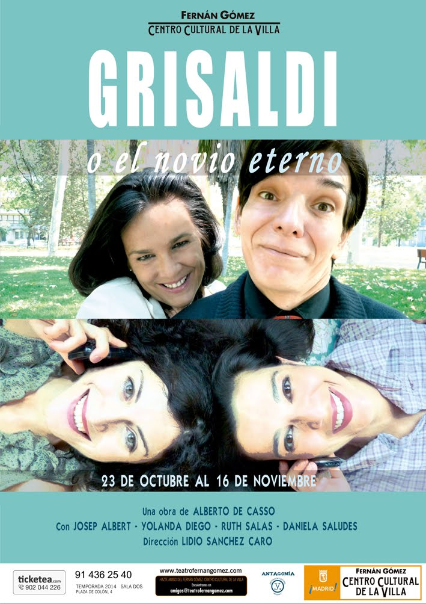

Grisaldi o el novio eterno
Grisaldi o el novio eterno, de Alberto de Casso.
Dirección de Lidio Sánchez Caro.
Teatro Fernán Gómez, 23 de octubre al 16 de noviembre, 2014.

Intérpretes: Josep Albert, Yolanda Diego, Ruth Salas y Daniela Saludes.
Diseño plástico: María Marcos Patiño.
Música: Calixto Álvarez Fernández.
Difusión: Patricia Marcos.
Producción: Antagonía Teatro - Artistas Y.
Dido, reina de Cartago
Dido, reina de Cartago, de Christopher Marlowe.
Dirección de Jon Viar.
Sociedad Cervantina. Sábado 4 de octubre.
Festival Internacional de Teatro de Almagro (Almagro Off). Teatro La Veleta. Lunes 14 de julio.
Intérpretes: Josep Albert, Dani Unzueta, Gorka Martín, Paula Quintana, Ana Gete, Ronal Cruces, Gorka Martín.
Traducción: Josep Albert.
Iluminación: Roberto Rojas.
Escenografía: Yeray González.
Vestuario: Víctor Vilas.
Música: Germán Collado.
Asesor de verso: Josep Albert.
Coreografía: Paula Quintana.
Regiduría: Javi Pérez.
Producción: Deborah Morente.
Ayudante de dirección: Gorka Martín.
Compañía: Escuela de la noche.